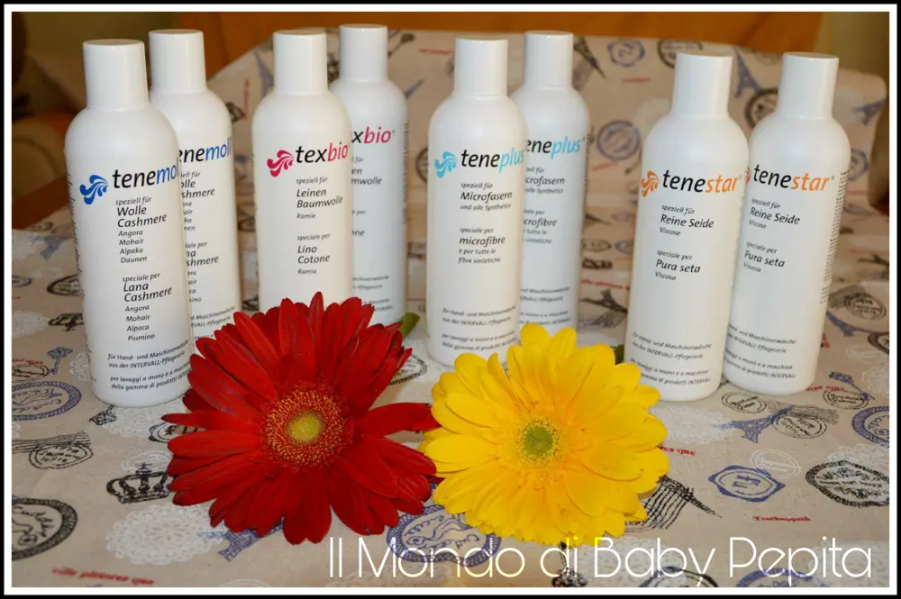
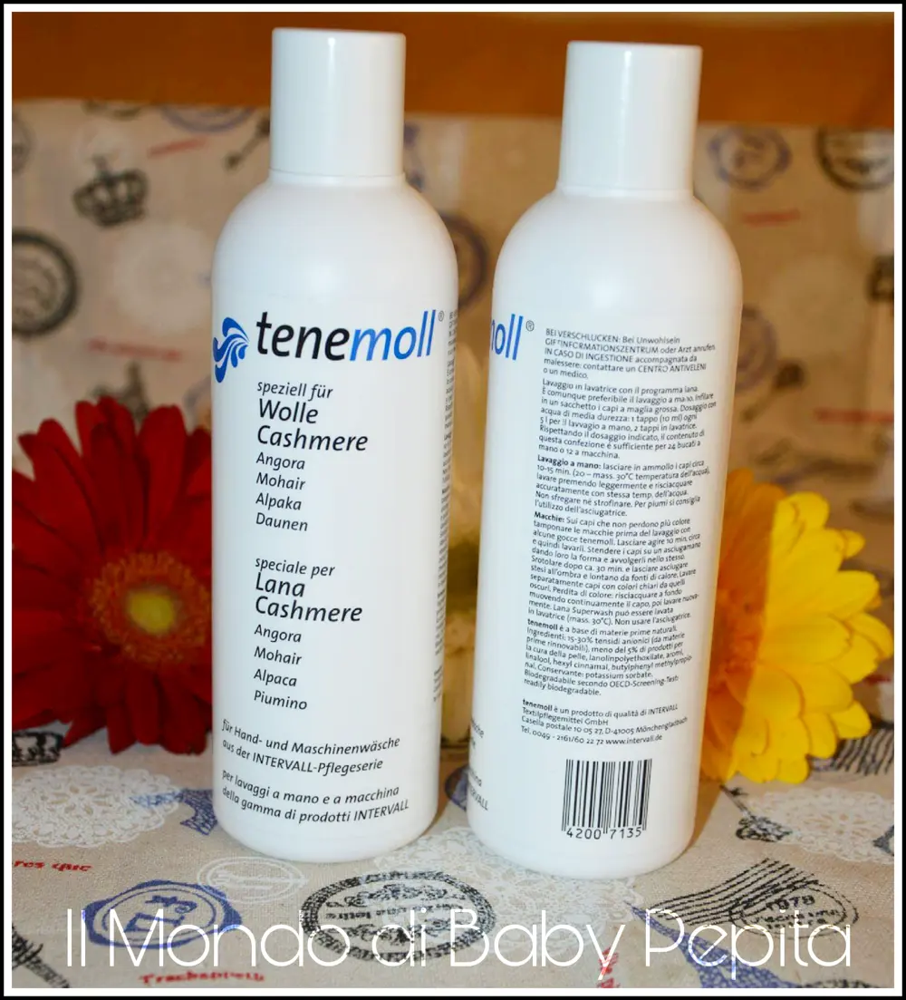
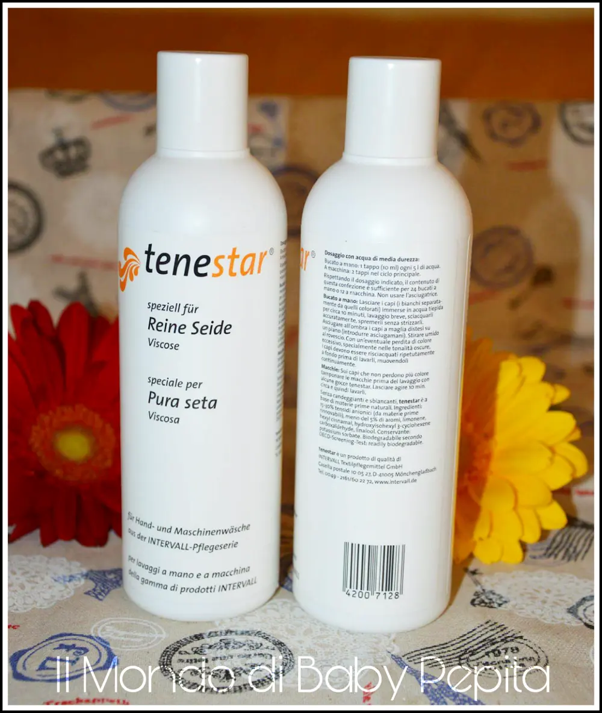
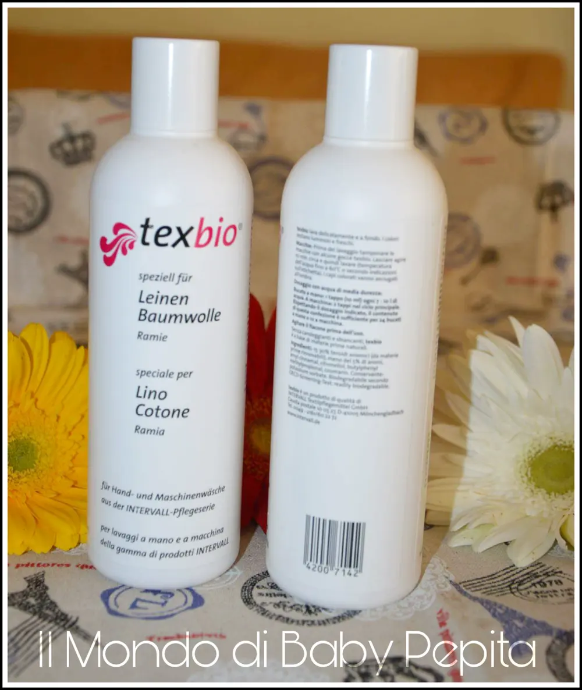
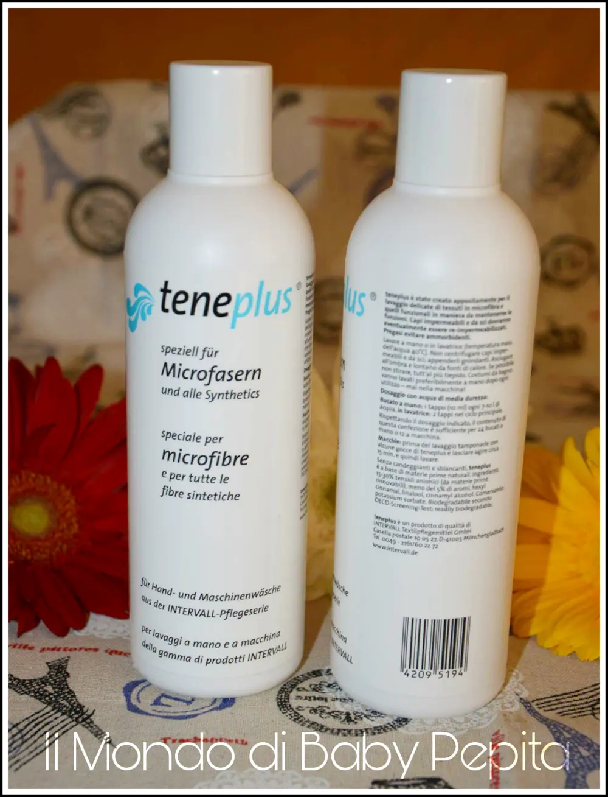

Intervall - bucato
Oggi voglio parlarvi di un prodotto per la casa, dei detersivi per il bucato. Grazie all'azienda INTERVALL che mi ha inviato diverse tipologie per diversi tessuti, sto testando dunque sul bucato di casa la propria efficacia. E' un'azienda tutta tedesca specializzata in 4 tipi di tipi di detersivo da lavatrice, tutti per i capi delicati.

PER IL BUCATO CI SONO:

Tenemoll:
Specifico per lana e cashmere. Ingredienti idratanti che assicurano che la lana rimane belle e morbida. Tenemoll non contiene ammorbidente, così i tessuti mantengono la loro forma e si sgualciscono.
Prezzo: 8,90 € per 250 g di prodotto.
Tenestar:

per pura seta. Aiuta a mantenere la lucentezza della seta risultando delicato e mantenendo la morbidezza .
In caso di vecchie macchie sul vostro bucato, prima di lavare con tenastar, tenera la seta 15 minuti in ammollo e poi procedere con il lavaggio.
Prezzo: 9,70 € per 250 g di prodotto .
Texbio:

per lino e cotone. Non contiene detergenti artificiali o abrasivi.
Adatto anche e soprattutto per chi soffre di allergie da tessuti, non contiene infatti additivi profumati.
Prezzo: 8,50 € per 250 g di prodotto .
Teneplus bucato:

per tessuti sintetici e micro fibra.
Adatto a capi come come costumi da bagno,indumenti sportivi,e lingerie.
Prezzo: 8,60 € per 250 g di prodotto .
Su ogni confezione troverete tutte le indicazione necessarie all'uso dei prodotti.
L'azienda intervall offre anche detersivi in polvere qualora non siete abituati con quelli liquidi.
Adatta tutta la gamma per lavaggi a mano o in lavatrice .
Acquistabili sul loro sito QUI